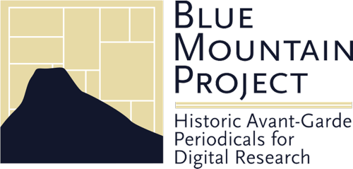

<?xml version="1.0" encoding="UTF-8"?>
<article xmlns="http://www.w3.org/1999/xhtml" data-template="templates:surround" data-template-with="templates/page.html" data-template-at="content">
    <div class="row">
        <div class="col-md-8">
            <div class="page-header">
                
                <h1 data-template="config:app-title">Generated page</h1>
            </div>
            <div>
                <p>The Blue Mountain Project is the common work of scholars, librarians, curators, and digital humanities researchers whose mission is to create a freely available digital repository of important, rare, and fragile texts that both chronicle and embody the emergence of cultural modernity in the West.</p>
                <p>Drawing on Princeton University’s exceptional collections and curatorial and academic expertise, the Blue Mountain Project is a digital thematic research collection of art, music and literary periodicals published between 1848, the year of the European Revolutions, and 1923 – a functional boundary for works presumed to be in the public domain.</p>
                <p>By offering high-quality digital images, full-text searching, deep indexing of contents, and detailed metadata and descriptive essays, the Blue Mountain Project aims to generate new avenues of critical and pedagogical engagement with this complex material. The project is unique in its goal of collecting full runs of rare journals of international provenance and multilingual scope, of experimental content and complex layout, and to organize them with high-level descriptive and technical precision.</p>
            </div>
        </div>
    </div>
</article>